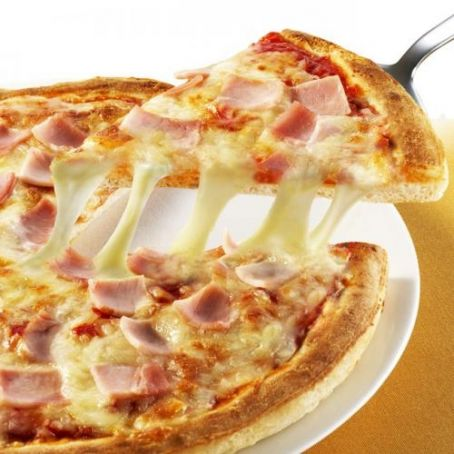

Pizzeria
| Pizzas | ingredientes | Precios |
|---|---|---|
Napolitian |
salsa de tomate,queso mozzarella, anchoas, orégano, alcaparras y aceite de oliva. | $20,000 |
Jamón y queso  |
250 gr. de jamón dulce en lonchas, 125 gr. de jamón dulce a tacos, Queso rallado, Tomate frito, orégano. | $40,000 |
Cuatro queso |
La pizza 4 quesos es una de las más consumidas del mundo, claro está, por los amantes del queso. Pero ojo, porque si seguimos la receta tradicional, no nos vale cualquier queso; de hecho, los cuatro quesos utilizados tienen la certificación de Denominación de Origen Protegida (DOP): El queso fontina, originario del Valle de Aosta; el queso gorgonzola, natural de Milán; el queso parmesano, originario de la ciudad de Parma; y el queso mozzarella, nacido en Campania. | $35,000 |
Barbacoa |
el ingrediente estrella de esta pizza es la salsa barbacoa o salsa BBQ. Se trata de una pizza nacida en Estados Unidos, pero que se ha convertido en la favorita de mucha gente por ser jugosa y una de las más intensas y potentes. Junto a la salsa barbacoa, esta pizza se elabora con carne picada y, a elección del comensal, con cebolla, que aporta un contraste de sabor único con el resto de ingredientes. | $50,000 |